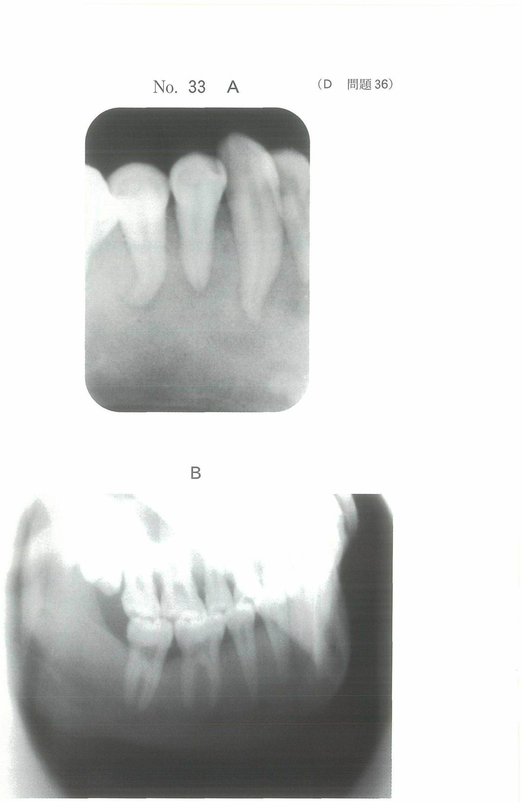

仮想咬合平面は、無歯顎患者において人工歯排列の基準となる平面である。有歯顎では咬合平面が存在するが、無歯顎では歯が喪失しているため、咬合堤上面に仮想的に設定する。
仮想咬合平面は前額面と矢状面の2方向から設定する。
両瞳孔線（瞳孔間線）に平行に設定する。咬合平面板を用いて、上顎咬合堤の前歯部上面を両瞳孔線と平行にする。
Camper平面（カンペル平面）に平行に設定する。
HIP平面は口腔内の解剖学的指標のみで決定できる平面である。
切歯乳頭の中央点と左右のハミュラーノッチを結ぶ3点で決定される平面。外部指標に頼らず口腔内のみで設定できる利点がある。
切歯乳頭は無歯顎においても位置が安定しており、重要な基準点となる。
注意：義歯床後縁やCamper平面の設定には切歯乳頭は使用しない。
73歳の女性。全部床義歯製作中の側貌写真（別冊No.45）を別に示す。ある基準平面に平行に仮想咬合平面を決定することとした。
この基準平面の決定に用いる点はどれか。2つ選べ。

【解説】矢状面での仮想咬合平面はCamper平面に平行に設定する。Camper平面は鼻翼下縁（ア）と外耳孔上縁（オ）を結ぶ平面である。
無歯顎者の補綴処置において切歯乳頭の位置を利用して設定するのはどれか。すべて選べ。
【解説】切歯乳頭は無歯顎でも位置が安定しており、咬合平面（HIP平面）、模型の正中線、人工歯排列位置の基準となる。義歯床後縁はアーラインを基準とし、Camper平面は外部指標（鼻翼・外耳孔）を用いる。
全部床義歯製作過程における仮想咬合平面の設定で基準になるのはどれか。3つ選べ。
【解説】仮想咬合平面の設定基準は、両瞳孔線（前額面）、Camper平面（矢状面）、HIP平面（口腔内指標）。Bonwill三角は下顎運動の解剖学的概念、フランクフルト平面は頭蓋計測の基準平面で仮想咬合平面の設定には用いない。